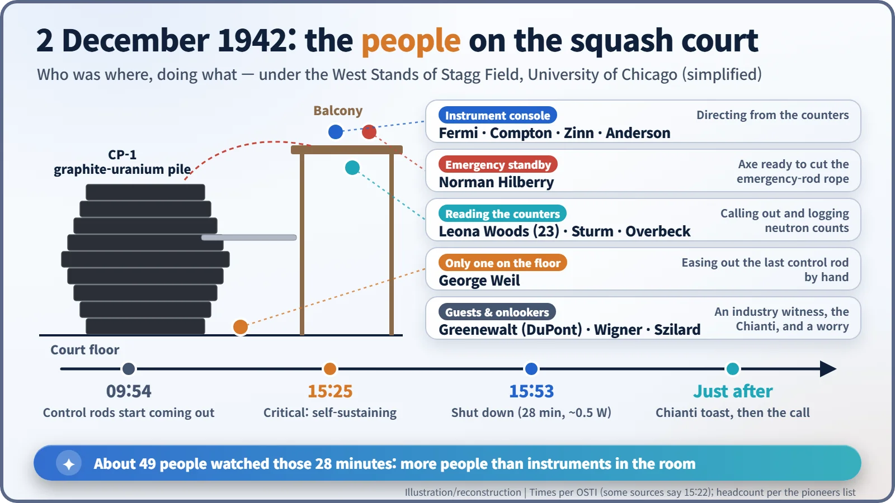
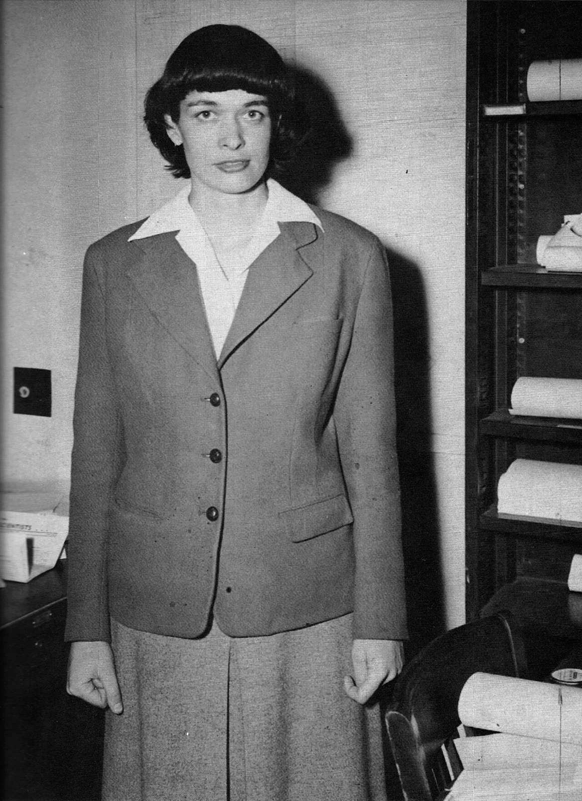
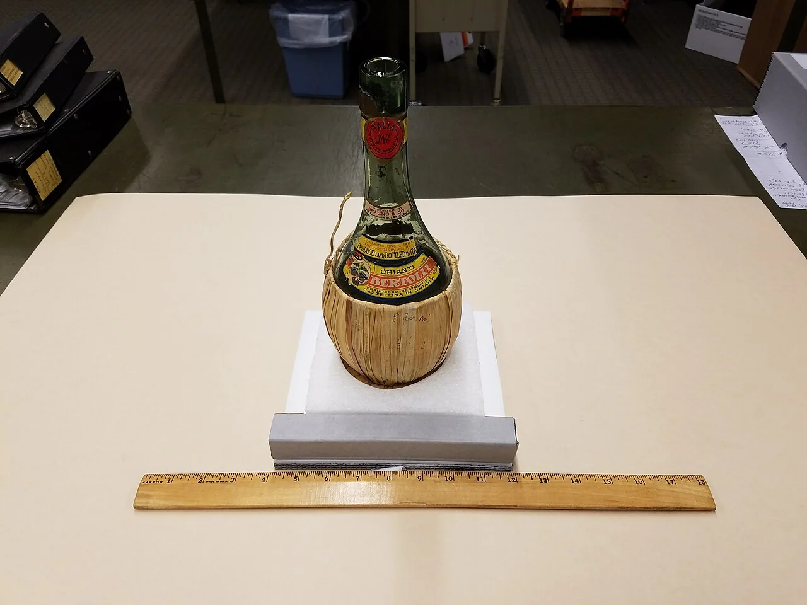
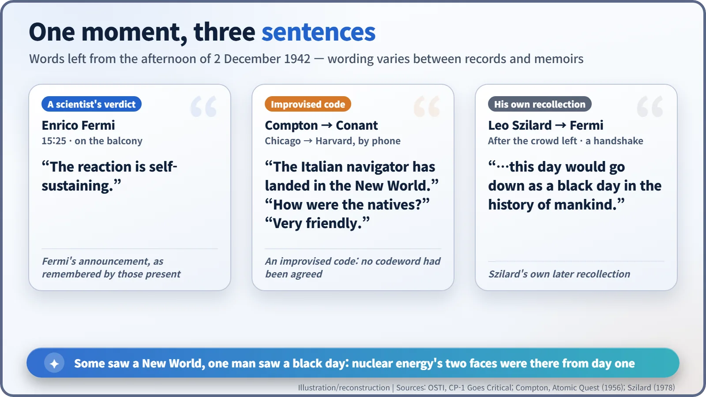
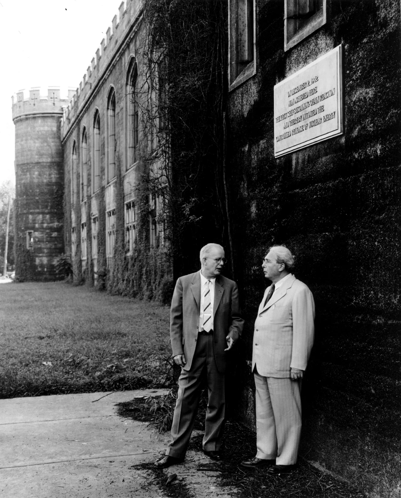

Nuclear History · 092
"The Italian Navigator Has Landed" — Compton's Coded Call and the People Who Watched Chicago Pile-1 Go Critical (1942)
The first controlled chain reaction lasted 28 minutes at half a watt; the people in the room, and the words they left, tell the rest of the story.
On 2 December 1942, minutes after Chicago Pile-1 sustained the first controlled nuclear chain reaction, Arthur Compton phoned James Conant with an improvised code: "The Italian navigator has landed in the New World." This is the story of the people in that squash court: the man with the axe, the 23-year-old reading the counters, the silent toast with Chianti, and Leo Szilard's warning of "a black day".
A phone call with no codeword
On the afternoon of Wednesday, 2 December 1942, a telephone rang in Cambridge, Massachusetts. It was for James B. Conant (1893–1978), president of Harvard and one of the men steering America's atomic research. On the line from Chicago was Arthur H. Compton (1892–1962). It was wartime, the line might not be private, and nobody had agreed on a codeword in advance. So Compton improvised.
"The Italian navigator has landed in the New World."
Conant caught on at once. "How were the natives?" "Very friendly." That is the exchange as recorded by the US Department of Energy's Office of Scientific and Technical Information (OSTI). The Italian navigator was Enrico Fermi. The New World was the first controlled, self-sustaining nuclear chain reaction. [1]
A 28-minute experiment, and the day around it
A few hours earlier, in a former squash court under the West Stands of the University of Chicago's Stagg Field, a pile of graphite and uranium called CP-1 began to sustain a chain reaction on its own at 3:25 p.m. Its power was about half a watt, too little to light a bulb, and it was shut down 28 minutes later, at 3:53 p.m. This story is not about the machine. It is about the people in the room. [1]

The man with the axe, and the 23-year-old calling out numbers
About 49 people are usually said to have been present, a figure taken from a list of "CP-1 pioneers" (other lists differ slightly). Fermi (1901–1954), Compton and others stood at the instruments on the balcony. Norman Hilberry waited with an axe: his job, in an emergency, was to cut the rope holding a safety rod above the pile. On the court floor itself there was only one person, George Weil, who eased the last control rod out by hand. [1] [3]
Among those calling out and logging the neutron counts was Leona Woods (1919–1986). She was 23, the youngest member of the team and the only woman in the room, a physicist who had built the boron trifluoride counters used in the experiment. Laura Fermi's memoir recounts Woods asking Enrico Fermi, "When do we become scared?" (the memoir does not pin the question to that afternoon). [4]

Paper cups and a signed bottle of Chianti
After the pile was shut down, the Hungarian-born physicist Eugene Wigner (1902–1995) produced a bottle of Chianti from behind his back, an Italian wine he had bought earlier in Fermi's honour. It was poured into paper cups, and the group drank a silent toast. [1] [6]
Those present signed the bottle's straw wrapping. According to OSTI, the only one who did not sign was Wigner himself, the man who had brought it. Team member Albert Wattenberg kept the bottle as a souvenir and is reported to have donated it to Argonne National Laboratory in 1980. [5]

A New World, or a black day?
As the room emptied, Leo Szilard (1898–1964), who had first imagined a nuclear chain reaction back in 1933, shook Fermi's hand. He told him he thought this day would go down as "a black day in the history of mankind." This comes from Szilard's own later recollection, not a note made on the day. On the afternoon his idea came true, he was already looking ahead to the bomb it could lead to. [1] [9]
Compton's phone call also exists in more than one version. In his memoir Atomic Quest (1956), he adds that "the earth was not as large as he had estimated, and he arrived at the new world sooner than he had expected." In other words, the pile had gone critical at a smaller size than predicted. In that telling, Conant asks, "Were the natives friendly?" and Compton replies, "Everyone landed safe and happy." [8]

What an engineer saw, and what a wife was not told
Also present, at Compton's invitation, was Crawford Greenewalt (1902–1993), a chemical engineer from the DuPont company. He sat on the Lewis committee, which was making a final review of how the bomb materials would be produced, and that afternoon he saw that a reactor was a machine that could actually be built. Just one day earlier, General Leslie Groves had told DuPont to move into reactor design and construction. On 28 December President Roosevelt approved a huge programme that included plutonium production plants. [2] [3]
The secret held even at home. Some time later, Laura Fermi threw a party for the "metallurgists" from her husband's laboratory. Every guest congratulated Enrico, but nobody would tell her why. At last one whispered, "He has sunk a Japanese admiral." She learned the truth only after the war. [7]
The stands came down; the plaque stayed
On 2 December 1952, a plaque went up on the wall of Stagg Field: "On December 2, 1942 man achieved here the first self-sustaining chain reaction and thereby initiated the controlled release of nuclear energy." When the West Stands were demolished in August 1957, the plaque was saved. The site became a National Historic Landmark on 18 February 1965, and on the 25th anniversary, 2 December 1967, Henry Moore's sculpture Nuclear Energy was dedicated there. [3]

The same 28 minutes looked like a New World to some and a black day to at least one. The two faces of nuclear energy stood together in that room from its very first afternoon.